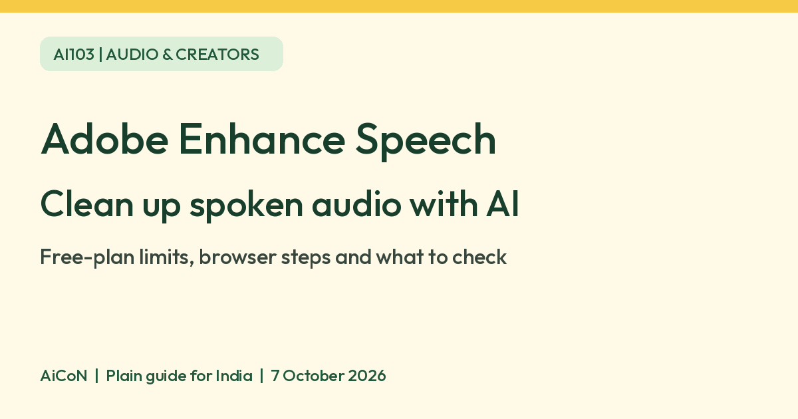

Adobe Enhance Speech: clean up spoken audio with AI
Adobe Podcast Enhance Speech uses AI to reduce background noise and improve the clarity of recorded speech. It runs in your browser. Adobe offers a free plan with audio-only uploads and clear file and daily limits.

What is Enhance Speech?
Enhance Speech processes a recording you already have. Adobe describes machine-learning audio enhancement that separates speech from unwanted background sounds and improves vocal clarity. It is not a live-call noise-cancelling app, a transcription guarantee or a replacement for recording clearly in the first place.
The service is part of Adobe Podcast, but you do not have to be a professional podcaster to try it. This guide focuses on the standalone speech-cleanup tool, not the separate Studio recording workflow.
Ideas for Kerala and India
As an editorial suggestion, try a short narration you recorded yourself for a class project, a voiceover or a small podcast. A clean comparison clip is a better starting point than uploading a long, important recording immediately.
We verified the public web service and Adobe's desktop/mobile browser documentation. We did not test an Indian account, payment checkout, Malayalam recordings or local-network upload performance. The pages reviewed did not state an India-specific restriction, but that is not a hands-on regional access test.
How to use it on a computer
- Keep your original audio file. Get permission from any other speakers before uploading their recording.
- Open Adobe Podcast and sign in with an Adobe account, or create one if needed.
- Choose Tools, then Enhance Speech, or open the official Enhance Speech page.
- Upload one audio file within the free-plan limits below.
- Wait for upload and processing to finish. Speed depends on your connection and device, per Adobe.
- Preview the enhanced recording. Compare it with the original, especially names, numbers, quiet words and your natural voice.
- Download it only if you are satisfied. Save your original separately. Do not expect an enhancement-strength slider on the free plan.
How to use it on a phone
- Open Adobe Podcast in your mobile browser. Adobe says no separate app is needed for this workflow.
- Open the menu and navigate to Enhance Speech.
- Tap Choose files and select your audio recording.
- Wait for processing, listen to the preview and tap Download when ready.
Adobe's help page lists recent desktop and mobile browsers. We did not test every phone or browser. If an upload fails, check the file type, size and duration before considering a paid plan.
What is free, and what is paid?
| Free verdict | Adobe's features page lists a free Enhance Speech plan for audio files. |
|---|---|
| Per file | Maximum 30 minutes and 500 MB on the free plan. |
| Daily limit | Maximum one hour of enhanced speech per day. |
| Free restrictions | Audio only, one upload at a time. Video, bulk upload and enhancement-strength adjustment are not included. |
| Premium | The current comparison lists video support, bulk uploads and strength adjustment, with files up to 1 GB, two hours per file and four hours per day. |
| Price | India checkout price, taxes and renewal terms were not verified. Check the final INR total and billing period before starting a paid plan or trial. |
File types and downloads
Adobe's technical requirements list WAV, MP3, M4A, AAC and FLAC audio imports. The broader technical page also discusses premium-size and video support; use the free-plan comparison above for the limits that actually apply to free use.
Adobe says Enhance Speech keeps the imported file format on download: for example, an MP3 input returns an MP3. We did not upload a file to test that behaviour.
Listen before sharing
Adobe's own guide notes that strong processing can make a recording sound unnatural. Do not promise studio-quality recovery of badly clipped or missing speech. Check the whole output before sharing it, and keep the unprocessed version.
Avoid uploading private calls, confidential work or sensitive medical or financial recordings. This is online processing, not a verified on-device tool. We did not verify account-specific retention or training controls.
Frequently asked questions
Is it free forever or just a trial?
Adobe lists a free plan with limits separately from Premium. Do not confuse basic free access with a Premium trial.
Can I upload a video for free?
No. The current comparison says free Enhance Speech is audio only. Video support is a Premium feature.
Can I change the enhancement strength for free?
The current features comparison marks strength adjustment as Premium. Older general guides describe sliders without always separating plan access.
Will it work well with Malayalam?
We did not verify Malayalam output quality. Test a short non-sensitive recording and listen closely.
Do I need an app?
Adobe documents the standalone workflow in desktop and mobile browsers. No separate app is needed for that workflow.
Sources: Enhance Speech, Current free/Premium comparison, Official introduction, Desktop/mobile steps, Technical requirements. Checked 7 October 2026.